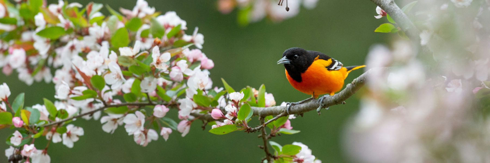

Native plants support native animals.

Compared to green infrastructure with low plant diversity, multi-species (esp. native) plantings are often more resilient against drought or water-logged conditions ##. Plant diversity also tends to increase the effectiveness of co-benefits, such as stormwater runoff reduction and extreme heat mitigation##. Plant diversity also supports wildlife diversity. NBHS identifies where new plantings (or simply reduced mowing) will yield the greatest benefits for humans and for nature. For example, lightning bugs (aka fireflies) benefit from the presence of long grasses9. While few homeowners (or their neighbors) would tolerate an unkempt yard, letting the grass grow longer in a tidily bordered bioswale would help lightning bugs (and many other species) while reducing landscaping labor and preserving aesthetics. Other NBHS activities that support native biodiversity include: removing invasive plant species; increasing ecological niches by adding shrubs underneath existing trees; reducing and filtering stormwater runoff and thereby improving downstream water quality and wildlife habitat; using GIS to situate a given property into a broader context of wildlife corridors and habitat connectivity.
Metrics of Success:
• Some homeowners may be inspired to act as "citizen scientists" and conduct plant and animal inventories on their properties over time
• NBHS can analyze collected data to yield a larger picture of ecological impacts (e.g. endangered species habitat)
• Client photos and notes will also help NBHS monitor the green infrastructure's long-term health and maintenance strategies
##Kilian Perrelet et al., “Engineering Blue-Green Infrastructure for and with Biodiversity in Cities,” npj Urban
Sustainability 4, no. 1 (2024): Article 27, https://www.nature.com/articles/s42949-024-00163-y
##Perrelet et al., “Engineering Blue-Green Infrastructure”
9Firefly Conservation & Research, “How You Can Help Prevent Fireflies from Disappearing,” Firefly.org, accessed
April 10, 2026, https://www.firefly.org/how-you-can-help.html